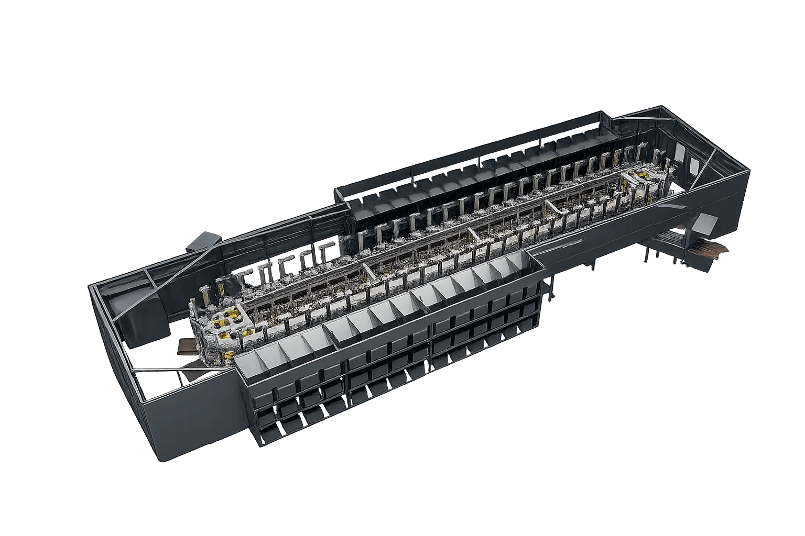
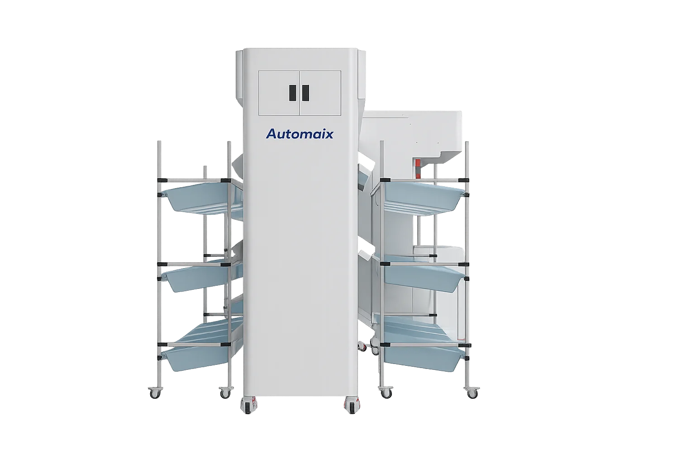
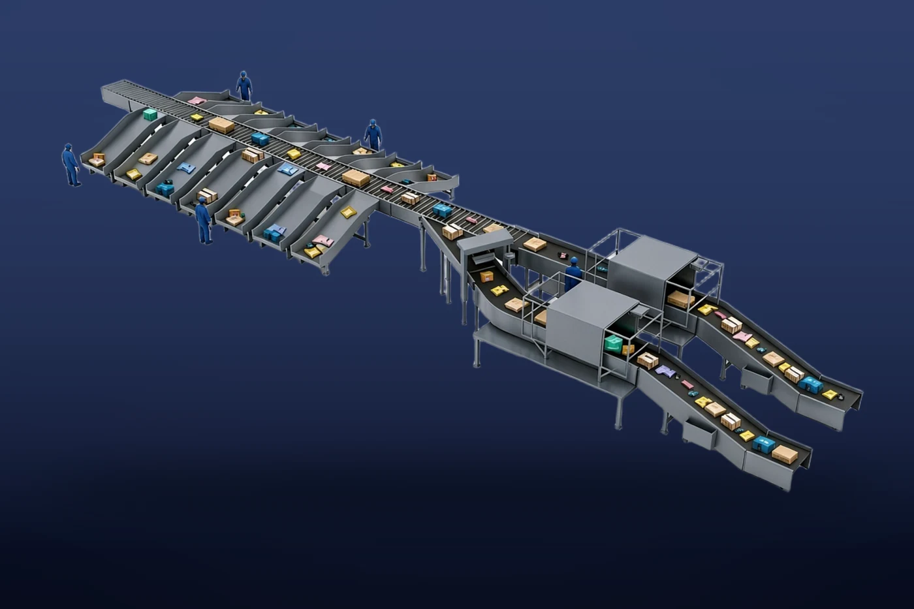
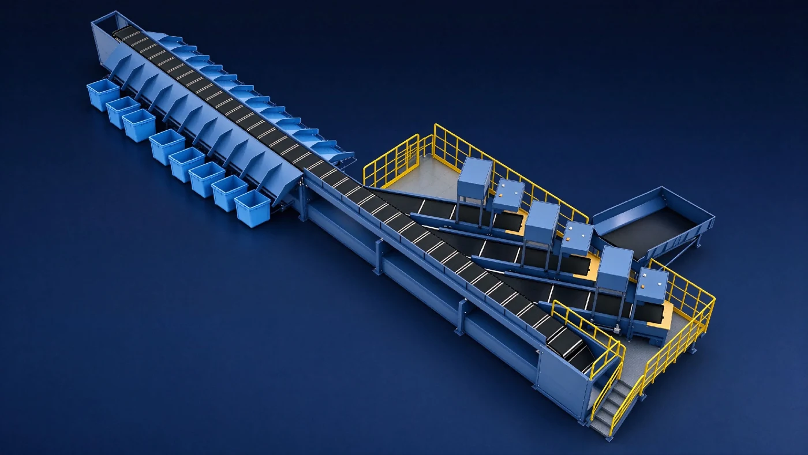
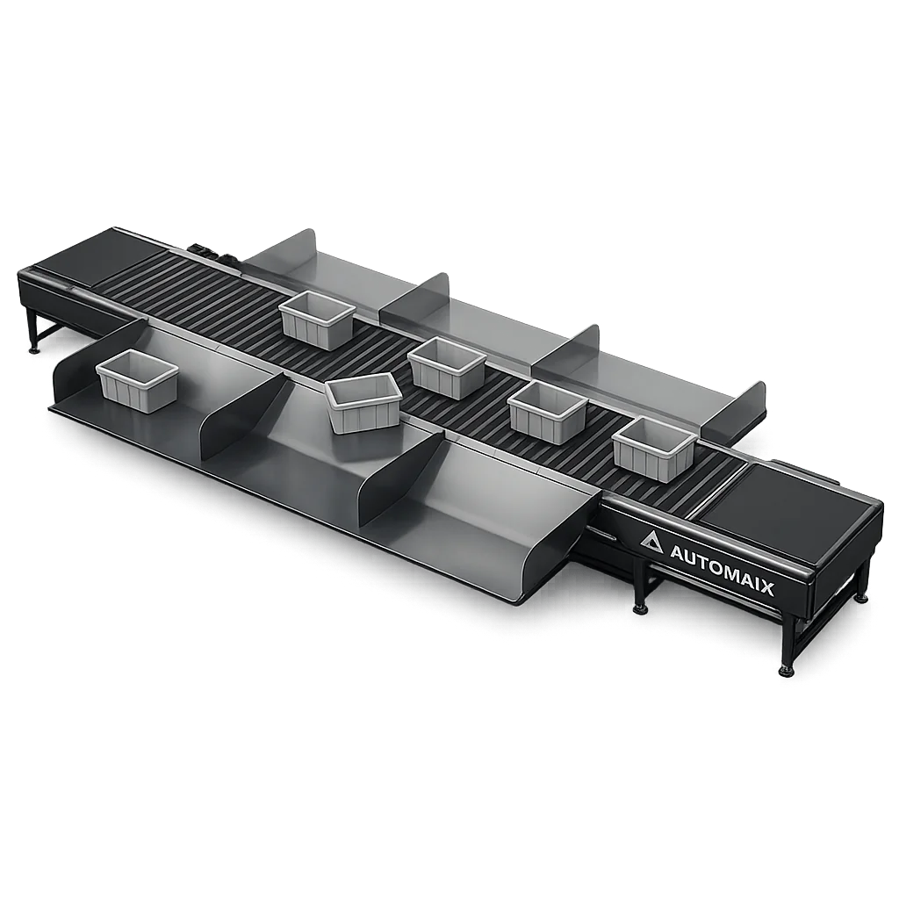
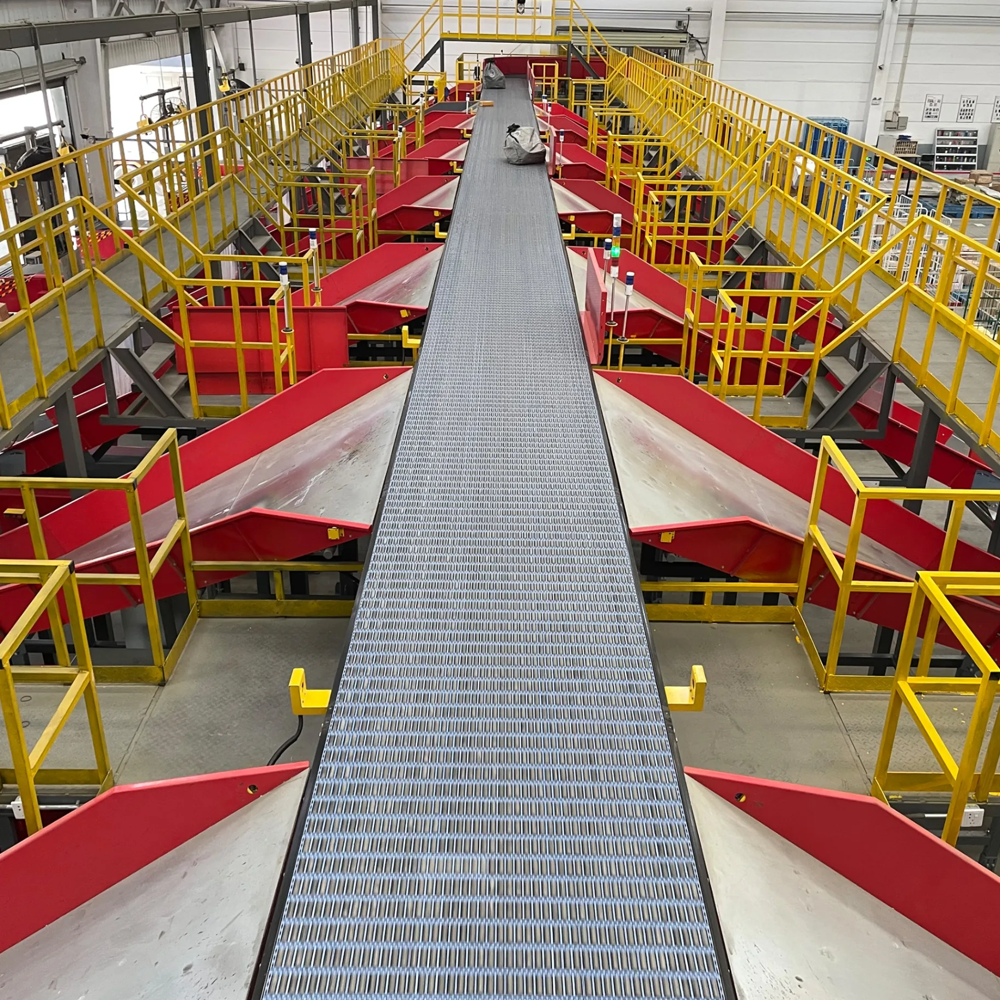
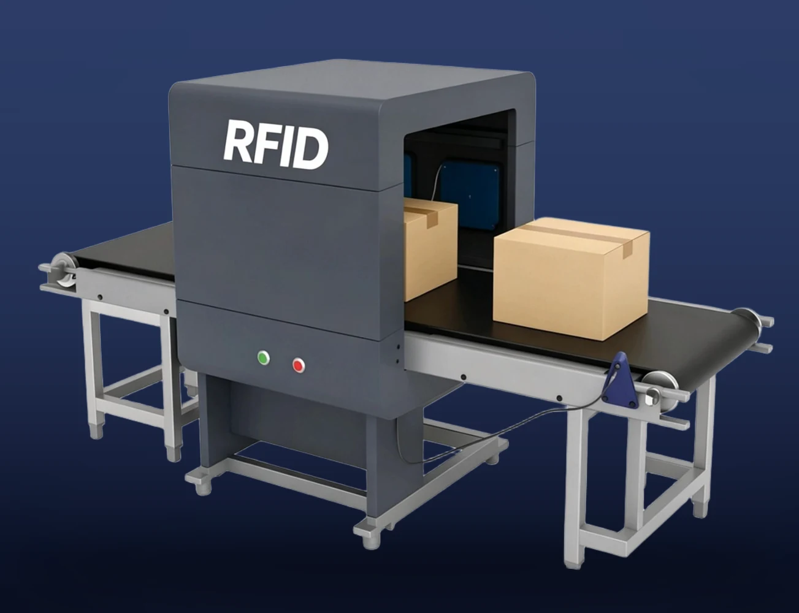
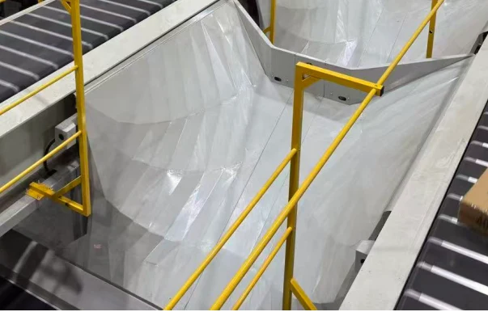
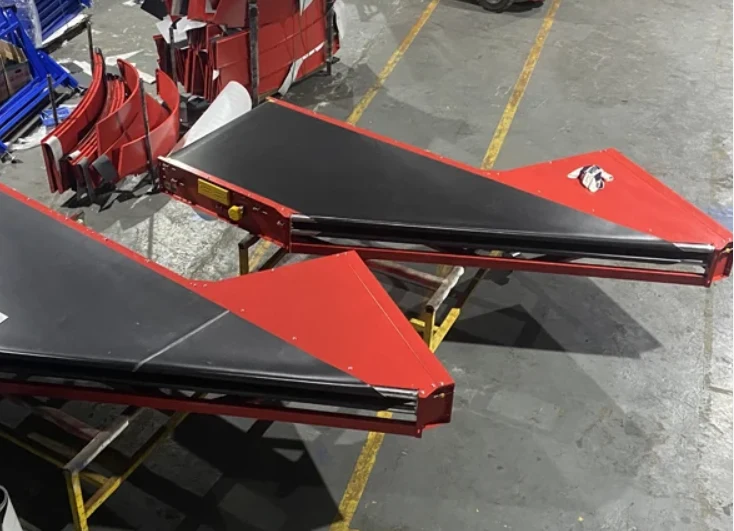
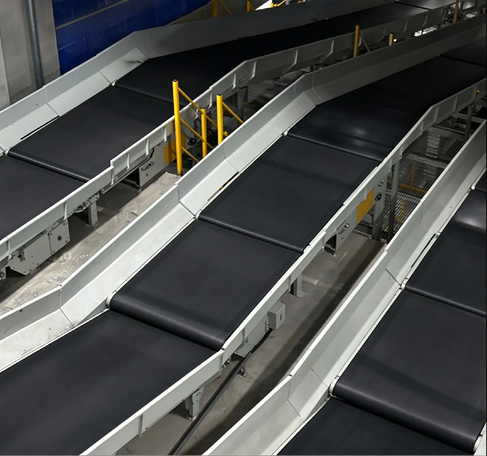

S01 / S02 / S03 / D01 / D02
SorterMX-5
多段式の仕分け間口へ荷物を搬送し、オーダー別・出荷先別に集約する3D仕分けシステムです。キャリッジ構成と投入方式に応じて、5モデルから選定できます。
製品詳細・仕様を見るLOGISTICS AUTOMATION
― 日本品質 × 中国製造 × AI技術が創る―
OUR VISION
Automaixは、日本のものづくりが長年培ってきた高い品質意識と現場改善の精神、ならびにトヨタ生産方式に代表される無駄の削減・標準化・継続的改善の考え方に、中国の優れた製造技術と生産力、さらに先進的なAI技術を融合した、スマート物流・自動化設備の開発・設計・製造メーカーです。
物流・製造現場が抱える人手不足、作業負担、安全性、品質、生産性などのさまざまな課題に対し、企画・設計から製造、導入、アフターサポートに至るまで、一貫したソリューションをご提供いたします。私たちが目指しているのは、効率だけを追求する自動化ではありません。人に寄り添い、働く方々の負担を軽減するとともに、安全と安心を支える「ぬくもりのある自動化」の実現を目指しています。
PRODUCTS
対象荷物の特性と物流工程に応じて、適切な設備をご検討いただけます。
S01 / S02 / S03 / D01 / D02
多段式の仕分け間口へ荷物を搬送し、オーダー別・出荷先別に集約する3D仕分けシステムです。キャリッジ構成と投入方式に応じて、5モデルから選定できます。
製品詳細・仕様を見る

T-MX-72-J
大型物流センター、宅配便・EC物流の大量仕分けに適した3D仕分けシステムです。T-MX-72-Jの標準仕様は72間口、処理能力10,800個/時で、一次仕分け・二次仕分けに対応します。
製品詳細・仕様を見る
T-M-48-J
小口・多品種の仕分けに適した、省スペース型の3D仕分けシステムです。T-M-48-Jの標準仕様は48間口、処理能力1,400個/時で、一次仕分け・二次仕分けに対応します。
製品詳細・仕様を見る
T-SL-50-J / T-SL-60-J
設置スペースに応じて選定できる、省スペース型仕分けシステムのSLシリーズです。標準仕様は、T-SL-50-Jが40〜50間口・1,000個/時、T-SL-60-Jが48〜60間口・1,250個/時です。
製品詳細・仕様を見る
環状タイプ
環状に走行するキャリッジ上のベルトを駆動し、荷物を横方向へ排出するソーターです。宅配便・EC物流・郵便など、多方面への仕分けを行う物流拠点に適しています。
製品詳細・仕様を見る






単品分離・整列搬送
複数の搬送ユニットを連携させ、混在した荷物の単品分離・姿勢調整・整列と、搬送間隔の調整を行います。後工程の読取り・計測・仕分け設備へ荷物を供給します。
製品詳細・仕様を見る
寸法計測・計量・バーコード読取り
搬送中の荷物からバーコード、寸法、重量、画像を取得するDWS（寸法計測・計量・識別）システムです。入出荷管理、トレーサビリティ、運賃算定に必要なデータを収集します。
製品詳細・仕様を見る
RFIDタグの非接触識別
アンテナ、リーダ、通過フレームを用いてRFIDタグを非接触で識別します。バーコードを視認できない工程や、複数タグの読取りへの適用を検討できます。
製品詳細・仕様を見る
片側・両側タイプ
表面パターンと荷物に応じたシュート形状により、仕分け後の荷物を円滑に搬送します。末端の緩衝ローラとの組合せにより、荷物への衝撃の軽減を図ります。
製品詳細・仕様を見る

APPLICATION & MOVIE
ABOUT AUTOMAIX
物流自動化設備の企画・販売、システム設計、導入支援、保守・技術支援を行います。日本国内の窓口として、お客様の現場条件と運用要件を確認し、適切な設備構成をご提案します。
常州武進・鎮江丹陽の2生産拠点で、物流搬送設備および自動化ラインを製造しています。
自社工場の規模データ：2026年9月30日時点。
製造設備・技術実績を詳しく →INTRODUCTION & SUPPORT
荷物の寸法・重量、必要処理能力、現状の運用と課題を確認します。
設置スペース、仕分け先数、既存設備との接続条件に基づいて、設備構成とレイアウトを検討します。
処理条件、電源仕様、使用温度範囲、据付工程、保守範囲を確認し、お見積りをご提示します。
据付・試運転、運用支援の実施内容と工程を、案件ごとに確認・調整します。
NEWS
CONTACT
対象荷物の仕様と現場条件をお知らせください。必要処理能力と運用要件に応じて、機種選定・システム構成をご提案します。
050-6864-1858
info@automaix.co.jp
入力内容をもとに、お問い合わせメールの下書きを作成します。内容をご確認のうえ、ご利用のメールアプリから送信してください。メールアプリが起動しない場合は、下書きをコピーまたは保存し、上記アドレス宛てにお送りください。